Dynamischer Monitor
Ihre Zukunftsfragen bleiben im Blick. Sie sehen, wo sich Einschätzungen verschieben und welche Pfade sich abzeichnen. In jedem Zyklus analysiert arq decisions den Rücklauf mit Ihnen, solange noch Zeit zum Steuern ist.
Das Radar ist Ihre eigene Instanz auf der Prognoseplattform von arq decisions. Menschen aus Ihrer Organisation und ihrem Umfeld schätzen Ihre Zukunftsfragen fortlaufend ein, eine KI-Prognose läuft mit, und gemeinsam mit arq decisions werten Sie aus, wo sich etwas bewegt und was daraus folgt.
Radar · kontinuierliche Navigation
Ein Radar zeigt auf einer vertrauten Karte, was sich bewegt und was näher kommt – früh genug, um entschlossen zu navigieren.
Ihre Zukunftsfragen bleiben im Blick. Sie sehen, wo sich Einschätzungen verschieben und welche Pfade sich abzeichnen. In jedem Zyklus analysiert arq decisions den Rücklauf mit Ihnen, solange noch Zeit zum Steuern ist.
Wissen, das über Abteilungen und Standorte verteilt ist, fließt in dieselben Fragen. Die Menschen schätzen nicht nur ein: Sie bringen Themen ein und erhalten die Insights, die daraus entstehen, auch ohne Platz am Strategietisch.
Ihre Organisation wendet die Methode selbstständig an: Fragen formulieren, die Plattform betreuen, mit der Crowd kommunizieren, den Rücklauf analysieren. arq decisions kommt einmal pro Zyklus zum Check-in. Auf Wunsch führen wir das Center of Excellence auch dauerhaft für Sie.
Das Reporting zeigt jede Frage im Verlauf und alle Fragen auf einen Blick: die Einschätzung Ihrer Crowd neben der KI-Prognose, die Begründungen dahinter und die Signale, die Handeln verlangen. In jedem Zyklus werten Sie es gemeinsam mit arq decisions aus.
Illustration mit erfundenen Fragen und Werten.
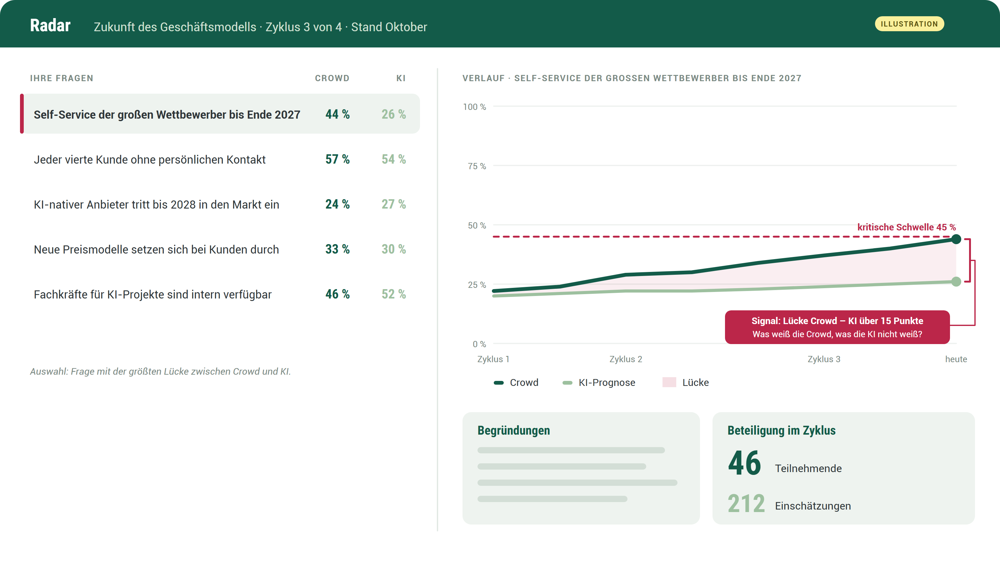
Crowd und KI schätzen dieselbe Frage ein. Zwei Dinge lösen ein Signal aus: wenn eine Einschätzung die kritische Schwelle erreicht, und wenn die Lücke zwischen Crowd und KI zu groß wird. Dann klären Sie mit arq decisions, welche Information den Unterschied erklärt.
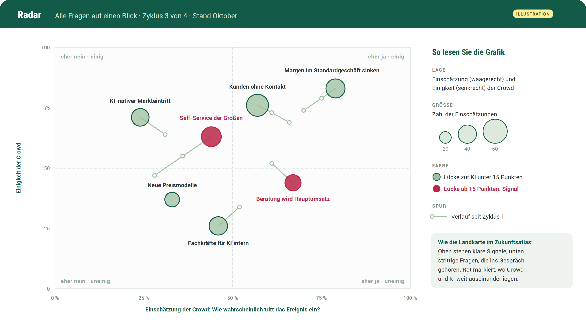
Jede Frage liegt dort, wo die Crowd sie einschätzt und wie einig sie sich ist. Die Größe zeigt, wie viele eingeschätzt haben, die Farbe, wie weit Crowd und KI auseinanderliegen. Wie auf der Landkarte im Zukunftsatlas sehen Sie, wo klare Signale stehen und welche Fragen ins Gespräch gehören.
Beschreiben Sie es uns in zwei Sätzen. Wir schlüsseln es für Sie auf, mit einer beispielhaften Landkarte möglicher Zukünfte.
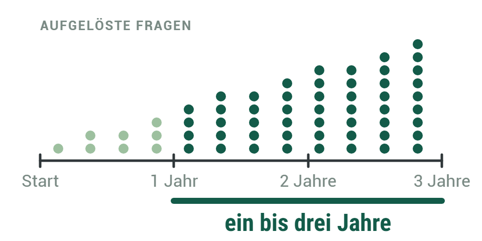
So lange läuft ein Radar typischerweise: lang genug, dass sich Fragen auflösen und Ihre Organisation an den Ergebnissen lernt.
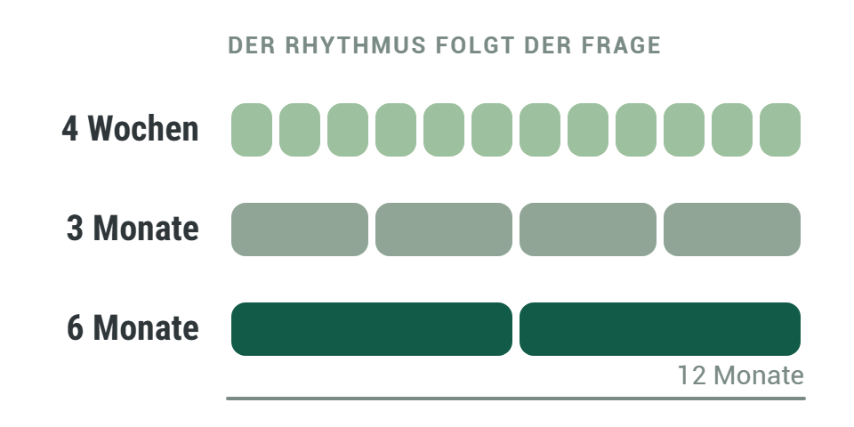
Vier Wochen, drei oder sechs Monate: Der Rhythmus folgt der Frage. Zyklen dürfen sich überlappen, damit nichts liegen bleibt.
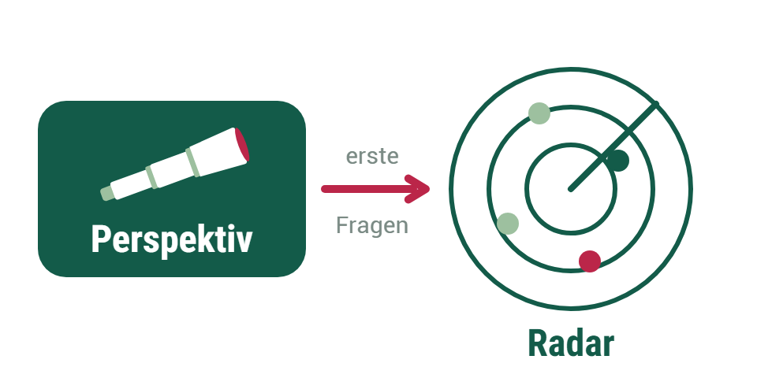
Jedes Radar beginnt mit dem Perspektiv. Der Zukunftsatlas liefert die ersten Fragen und Signale, auf denen alles Weitere aufbaut.
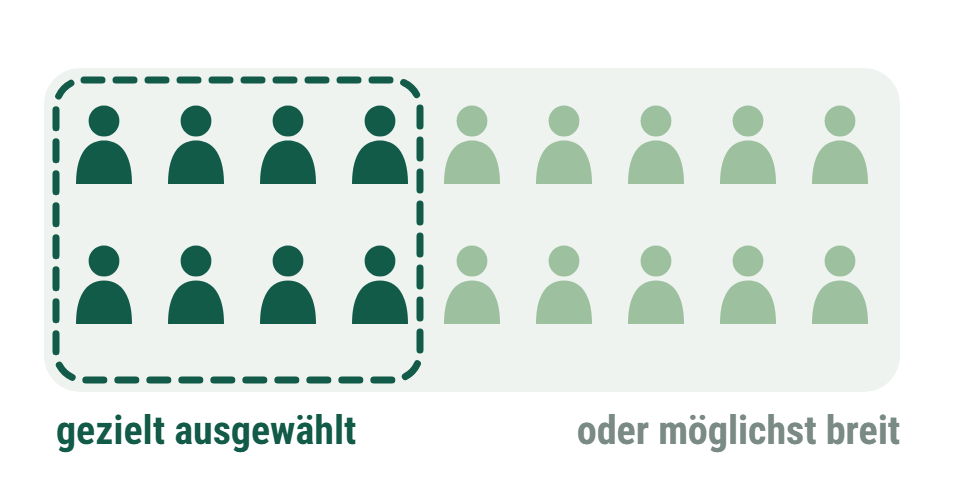
Woher soll das Wissen kommen, und wofür wird es gebraucht? Danach wählen wir die Stimmen: Abteilungen, Fachgruppen, Mitglieder oder die ganze Belegschaft, gezielt ausgewählt oder mit möglichst breiter Beteiligung.
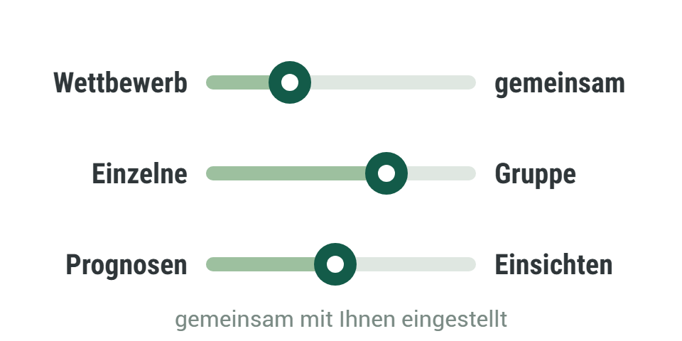
Wir stimmen mit Ihnen ab, wie die Crowd angesprochen wird: im Wettbewerb oder gemeinsam, als Einzelne oder als Gruppe, mit dem Fokus auf Prognosen oder auf Einsichten.
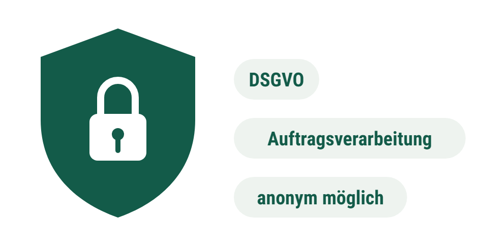
Einschätzungen können anonym abgegeben werden. Hosting und Datenverarbeitung regeln wir nach DSGVO in einem Vertrag zur Auftragsverarbeitung.
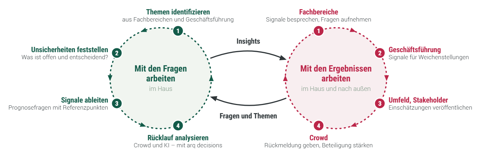
Im ersten Kreis arbeiten Sie mit den Fragen: Themen identifizieren, Unsicherheiten feststellen, Signale ableiten und den Rücklauf von Crowd und KI analysieren. Im zweiten Kreis arbeiten Sie mit den Ergebnissen, im Haus und nach außen. Insights fließen hinüber, neue Fragen und Themen zurück.
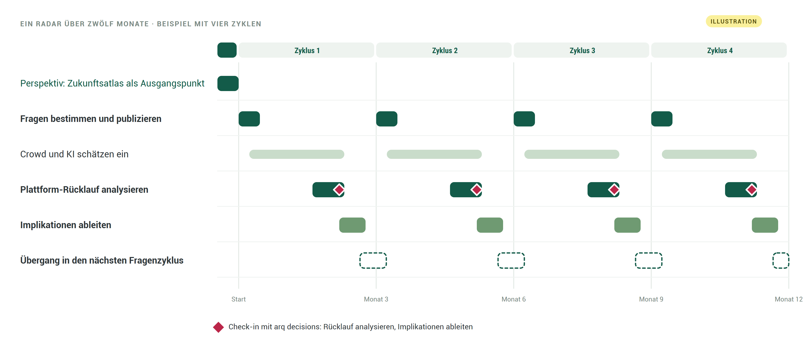
Jeder Zyklus folgt demselben Muster: Fragen bestimmen und publizieren, Crowd und KI schätzen ein, den Plattform-Rücklauf mit arq decisions analysieren, Implikationen ableiten und in den nächsten Fragenzyklus übergehen. Je nach Thema dauert ein Zyklus vier Wochen bis sechs Monate.
Das Perspektiv ist im Radar immer enthalten. Der Zukunftsatlas liefert die ersten Fragen und Signale; im Radar laufen sie weiter, neue kommen hinzu, und mit jedem Zyklus werden mehr Menschen aus Ihrer Organisation eingebunden: als Einschätzende und als Adressaten von Themen und Insights.
Die Fallbeispiele zeigen, wie Organisationen mit dem Perspektiv und dem Radar an ihren Zukunftsfragen arbeiten.
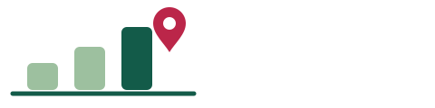
Industrie, Innovation und externe Impulse gemeinsam beurteilen, um Prioritäten zu setzen und Mitglieder früh zu orientieren.
Kammer

Crowd und KI schätzen je Aufgabe ein, bis wann sie automatisiert wird: ein Radar für Personal, Qualifizierung und Ressourcen.
Industrieverband
Marktbeobachter, Crowd und KI beziffern vier mögliche Zukünfte; Investitionen folgen den Signalen.
Fachverlag
Unterschiedliche Erwartungen werden zu einem gemeinsamen Bild möglicher Zukünfte, mit Signalen für den richtigen Zeitpunkt.
Fachverband im öffentlichen Dienst
Im Gespräch klären wir, welche Fragen für Ihre Organisation entscheidend sind und wie Sie mit dem Perspektiv und dem Radar dranbleiben.